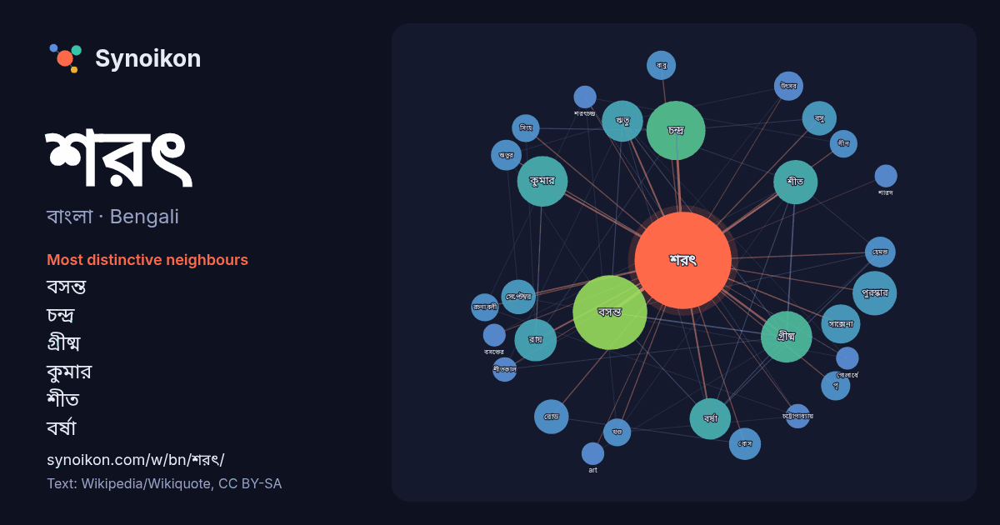

বাংলা · Bengali · word of the day list
শরৎ
“autumn” · The words found around it in 578 instances from Bengali Wikipedia, Wikiquote.

Most distinctive neighbours
- বসন্ত 58×
- চন্দ্র 33×
- গ্রীষ্ম 30×
- কুমার 23×
- শীত 22×
- বর্ষা 20×
- ঋতু 20×
- সাক্সেনা 19×
- রায় 14×
- বসু 12×
- বোস 12×
- ঋতুর 12×
- হেমন্ত 12×
- রোড 11×
- বাবু 10.0×
- পৃ 9.9×
- রচনাবলী 9.8×
- দীন 9.7×
- খণ্ড 8.8×
- সিংহ 8.3×
× = how many times more often than in general Bengali Wikipedia text.
Most frequent neighbours
- বসন্ত 65
- চন্দ্র 41
- গ্রীষ্ম 31
- কুমার 30
- পুরস্কার 23
- শীত 23
- রায় 21
- সালের 21
- ঋতু 20
- বর্ষা 20
- সাক্সেনা 18
- বসু 14
- রোড 14
- সেপ্টেম্বর 14
- বোস 12
- ঋতুর 11
- মার্চ 11
- হেমন্ত 11
- উৎসব 10
- পৃ 10
In context
- ভাদ্র ও আশ্বিন মাস মিলে শরৎ বাংলার ষড়ঋতুর তৃতীয় ঋতু। শরৎকে ইংরেজিতে "অটাম" বলা হলেও উত্তর আমেরিকায় একে "ফল" হিসেবে ডাকা হয়। পৃথিবীর ৪টি প্রধান ঋতুর Wikipedia snippets · শরৎ
- শরৎ বসন্ত কাল (সরলীকৃত চীনা অক্ষর: 春秋时代; ঐতিহ্যবাহী চীনা অক্ষর: 春秋時代; ফিনিন: Chūnqiū Shídài) চীনের ইতিহাসের একটি সময়কাল, যা আনুমানিক খ্রিস্টপূর্ব ৭৭১ Wikipedia snippets · শরৎ বসন্ত কাল
- দীন শরৎ (১৮৮৭-১৯৪১) নেত্রকোণা জেলার বাউল গায়ক ও গীতিকার ও সুরকার, যার পুরো নাম ছিলো ‘শরৎচন্দ্র দেবনাথ’, আবার কোথাও ‘শরৎচন্দ্র নাথ’, আবার কারো মতে ‘শরৎচন্দ্র Wikipedia snippets · দীন শরৎ
- গার্দিহেওয়া শরৎ চন্দ্রলাল ফনসেকা (জন্মঃ ১৮ ডিসেম্বর ১৯৫০) শ্রীলঙ্কার একজন সাবেক রাজনীতিবিদ এবং সাবেক সংসদ সদস্য। এছাড়া তিনি শ্রীলঙ্কা সেনাবাহিনীর একজন Wikipedia snippets · শরৎ ফনসেকা
- শরৎ চন্দ্র সিংহ (অসমীয়া: শৰৎ চন্দ্র সিংহ) অসমের প্রাক্তন মুখ্যমন্ত্রী ও ভারতীয় জাতীয় কংগ্রেস, ভারতীয় জাতীয় কংগ্রেস (সমাজবাদী) ও জাতীয়তাবাদী কংগ্রেস Wikipedia snippets · শরৎ চন্দ্র সিংহ
- শরৎ শইকীয়া (১১ মার্চ ১৯৪৮ – ১ আগস্ট ২০১৯) একজন ভারতীয় রাজনীতিবিদ ছিলেন যিনি ভারতীয় জনতা পার্টির রাজনীতির সাথে যুক্ত ছিলেন। তিনি তিনবার মাহমরা বিধানসভা Wikipedia snippets · শরৎ শইকীয়া
- শরৎ বাবু একজন ভারতীয় চলচ্চিত্র অভিনেতা যিনি মূলত তামিল এবং তেলুগু ভাষার সিনেমায় কাজ করেছেন, এছাড়া তার অভিনীত চলচ্চিত্রগুলোর মধ্যে কন্নড় এবং মালয়ালম Wikipedia snippets · শরৎ বাবু
- শরৎ কুমার রায় (১৮৭৬ - ১২ এপ্রিল ১৯৪৬) ব্রিটিশ ভারতের রাজশাহী অঞ্চলের একজন প্রখ্যাত ব্যক্তিত্ব এবং বরেন্দ্র অঞ্চল সম্পর্কিত গবেষণার প্রাথমিক যুগের অন্যতম Wikipedia snippets · শরৎ কুমার রায়
More Bengali words
- অরণ্য
- আয়না
- ইতিহাস
- ঈশ্বর
- কাজ
- কুকুর
- ক্ষমতা
- খাদ্য
- গান
- গ্রীষ্ম
- ঘড়ি
- ঘণ্টা
- ঘোড়া
- ছায়া
- জননী
- জলবায়ু
- জীবন
- ঝড়
- টাকা
- ট্রেন
- দারুচিনি
- দ্বীপ
- নক্ষত্র
- নীরবতা
- পরিবার
- পানি
- পাহাড়
- প্রকৃতি
- বাগান
- বিজ্ঞান
- বিড়াল
- বৃষ্টি
- ভাষা
- মধু
- মরুভূমি
- মানচিত্র
- মৃত্যু
- রাস্তা
- রুটি
- লবণ
- শহর
- শিল্প
- শীত
- সত্য
- সময়
- সেতু
- সোনা
- স্বাস্থ্য
- হৃদয়
Precomputed on 2026-10-09 with default settings (±5 words, medium corpus). The interactive map can refresh it with live data.